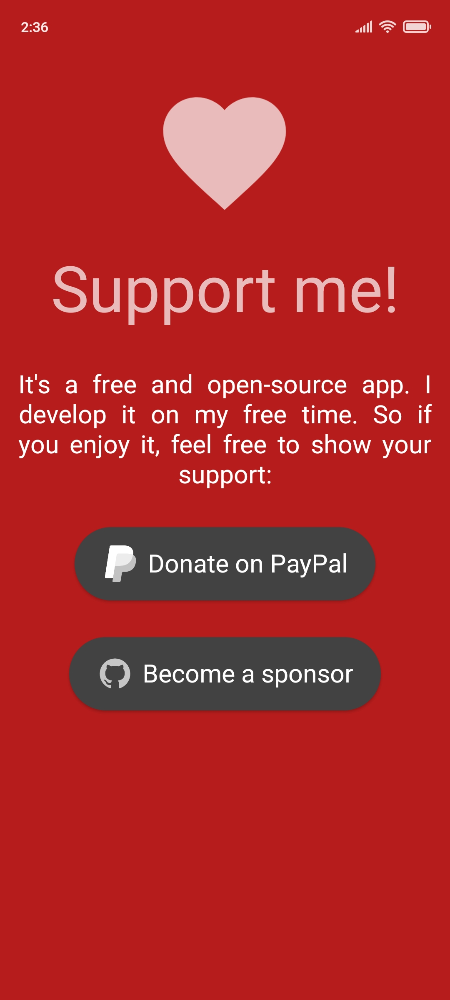
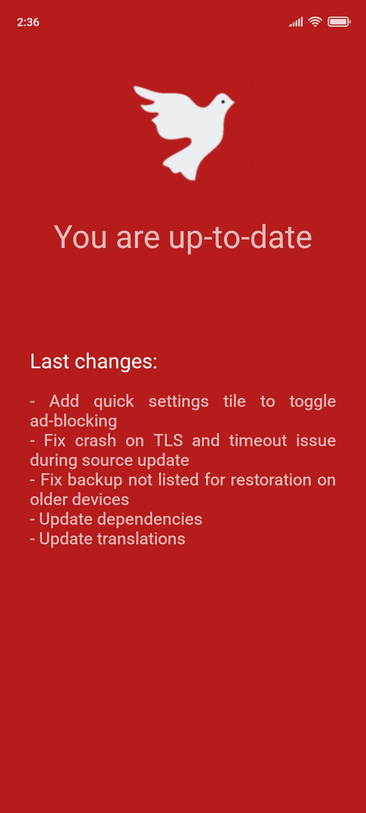

AdAway 上手测评：给 Android 装个"去广告的脑子"
被 APP 广告烦了大半年，从浏览器插件到系统级拦截一路踩坑，最终在 AdAway 上找到归宿。这篇讲我这半个月用下来的真实体验。
说出来不怕大家笑——我之前为了去手机广告，把市面上能试的方法几乎试了个遍。浏览器装 uBlock，APP 里的广告照样弹；换 AdGuard 的 VPN 模式，手机电量哗哗往下掉；甚至试过手动改 hosts 文件，结果每次重启都被系统重置回去。说实话，那段时间我一度以为 Android 上就没有靠谱的去广告方案了。
直到朋友丢给我一句话："你试试 AdAway，去它的官网看看——root 之后直接改系统文件，那才是真·系统级。"我当时的第一反应是——又一个"系统级"，上次 AdGuard 也是这么说的，结果 VPN 模式跑起来跟开了个后台大电厂似的。但抱着死马当活马医的心态，我还是去把它装上了。
第一眼界面：比想象中简陋，但逻辑清晰
安装包从下载拿，过程没什么特别的——先获取 root 权限（我的机子已经刷了 Magisk，直接授权就行），然后打开 APP，主界面就是一个 Dashboard——顶部一个大大的应用按钮，下面分了几个卡片：Hosts Sources、Blocklist、Allowlist、Redirection。说实话第一眼没什么惊艳的设计，甚至有点朴素，但每个按钮该做什么一眼就能看懂，没有那种"藏在三级菜单里的高级功能"。

我当时心里想，行吧，工具嘛，好用比好看重要。
核心体验：三个让我惊喜的地方
Hosts 源管理：终于不用手动改文件了
这是我用得最多的功能。之前手动改 hosts 最麻烦的就是找源、更新——网上散着一堆 hosts 文件，每个维护者的更新频率还不一样，有的半年不更，有的每周都刷。AdAway 把这些源的管理集中到了一处：你点 Hosts Sources，右上角加一个 URL，它就自动下载、合并、去重，然后一键应用到系统 hosts 文件里。
我现在开了四个源：Steven Black Unified、217heidai 的中文源、AdGuard 的基础列表，还有一个我自己维护的小文件（用来拦几个特定的广告域名）。四源合并之后有四万多条规则，全部写进 /system/etc/hosts，总共不到一秒钟。而且它有自动更新，设成每周 Wi-Fi 下更一次，完全不用管。
Redirect 规则：这个功能救了我一命
我之前一直用 Blocklist 拦广告域名，但遇到过一个尴尬的情况：Google 的域名被某个 hosts 源当成"跟踪域名"给拦了，结果我想访问的一个国内镜像也跟着挂了——因为 DNS 被送去了 127.0.0.1，根本连不上。
AdAway 的 Redirect 规则就是专门干这个的。和 Blocklist 把域名送去空 IP 不同，Redirect 可以把指定域名改送到你想要的任意 IP。我现在把 Google 相关的几个域名 Redirect 到了一个国内可解析的 IP，既不会被 hosts 源误拦，又能正常访问镜像站。规则的优先级比 Blocklist 高，所以即使某个源把 google.com 加进了拦截列表，我的 Redirect 规则还是会先生效。

故障排查：我差点放弃，是它帮我救回来的
装完的第一天，我重启手机之后打开 AdAway，屏幕上赫然写着"已禁用"。hosts 文件被重置回了系统默认的 localhost 那一行。说实话我当时差点直接卸载——又一个"重启就失效"的坑，我之前已经踩过了。
但这次我没马上动手，而是去翻了它的AdAway文档。排查步骤写得非常清楚：先直接用 root 权限 cat /system/etc/hosts 看文件里到底有什么，然后 echo 测试能不能写，再检查 Magisk Systemless Hosts 有没有启用。我跟着走了一遍，发现问题出在 A/B 分区上——我刷机时只给 A 分区刷了 Magisk，重启时切换到了没刷的 B 分区，hosts 自然就被重置了。两边都刷完之后，重启再也没出过问题。
这件事让我对 AdAway 印象改观：它不是那种"一键就好"的懒人工具，但只要你愿意花五分钟排查，几乎所有问题都能解决。文档写得够细，而且它不会用那种"自动修复"的黑魔法给你添新的坑。
有点别扭的地方
说点实话。AdAway 的界面确实有点老，Material Design 3 该有的动效和布局都没有，看起来像安卓 7.0 时代的 APP。还有一个我不太习惯的点：它默认不会自动应用 hosts 更新——自动下载可以开，但自动应用默认关着，每次更新完都要手动点一下 Apply。我理解这是为了安全（万一某个 hosts 源被劫持了，自动应用就会直接中招），但用起来还是觉得多了一步。
适合谁 / 不适合谁
适合：
- 有 root 权限的 Android 用户——这是 AdAway 的主场，系统级拦截几乎零开销，不像 VPN 模式那样吃电量
- 愿意花十分钟折腾一下的人——hosts 源的选择、Redirect 规则的配置都需要点耐心，但一次配置好之后基本不用管了
- 同时用很多 APP 的人——浏览器插件只能拦浏览器，AdAway 管整个系统
不太适合：
- 不想 root 的用户——虽然 AdAway 也有 VPN 模式，但和 AdGuard、Blokada 比没什么优势
- 连 Magisk 是什么都懒得搜的人——安装和排查过程确实比"一键安装 APP"麻烦不少
半个月下来的感受
现在我手机上四万多条规则在默默运行，开屏广告、插屏广告、推送广告基本全没了。唯一还遇到的几个漏网之鱼，要么是硬编码 IP 不走 DNS（hosts 拦不住），要么是 APP 自己开的 WebView 里的广告——这种确实没辙，但比例已经低到可以忽略了。
如果你还在被手机广告烦，又不想忍受 VPN 模式的电量消耗，不妨试试 AdAway。它不是最花哨的工具，但可能是最扎实的那个。
这套资料在三个仓库都能拿到，GitHub 上维护着原始 hosts 源的索引，国内访问慢的可以走Gitee 镜像，GitCode 也有一份完整备份，挑哪个顺手用哪个就行。